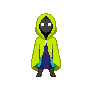

RIO
EM VIDA
PEQUENAS AÇÕES, GRANDES MUDANÇAS!

Ricardo Oliveira Nascimento
Fábio Leite
📖 Como Jogar
🎯 Seu objetivo
Você é o Guardião do Rio. O rio da sua cidade está poluído e precisa da sua ajuda. A cada dia, escolha ações para melhorar a qualidade do rio até chegar a 100%. Mas cuidado: o tempo passa e, se você não agir, a poluição volta a crescer sozinha — e se a qualidade chegar a 0%, o rio morre.
🔁 Como funciona um dia
- Escolha uma ou mais ações disponíveis no painel.
- Cada ação tem um efeito (quanto melhora o rio) e um prazo (quantos dias leva pra fazer efeito de verdade).
- Clique em FINALIZAR DIA para avançar o tempo.
- No fim do dia, eventos aleatórios podem acontecer — bons ou ruins.
- Novas ações são desbloqueadas conforme os dias passam.
🛠️ As ações
Remove o lixo visível da água. É rápida e sempre disponível — sua base de ação diária.
Árvores nas margens seguram o solo e protegem o rio da erosão. Leva mais tempo, mas o efeito é duradouro.
Educa e engaja a comunidade a gerar menos lixo. O efeito cresce quando a população participa.
Fiscaliza a indústria local, reduzindo o dano de vazamentos químicos que possam acontecer.
🎲 Eventos aleatórios
Ao fim de cada dia, existe uma chance de algo acontecer — chuvas, retorno de peixes, crescimento natural, mas também vazamentos e contaminações. Ter uma Fábrica fiscalizada reduz o estrago de eventos industriais, e ações como Árvores e Reciclagem ganham bônus quando combinadas com certos eventos positivos.
🏆 Vitória e derrota
Vitória: a qualidade do rio chega a 100%.
Derrota: a qualidade do rio cai a 0%.

Escolha uma ação para começar a cuidar do rio...
🎉 RIO SALVO! 🎉
Parabéns, Guardião do Rio!
Qualidade Final: 100%
Pontuação Final: 890 ⭐
Dias utilizados: 12
Ricardo Oliveira Nascimento
Fábio Leite
💀 O RIO MORREU 💀
A poluição venceu dessa vez...
Sobreviveu até o dia: 0
Pontuação Final: 0 ⭐